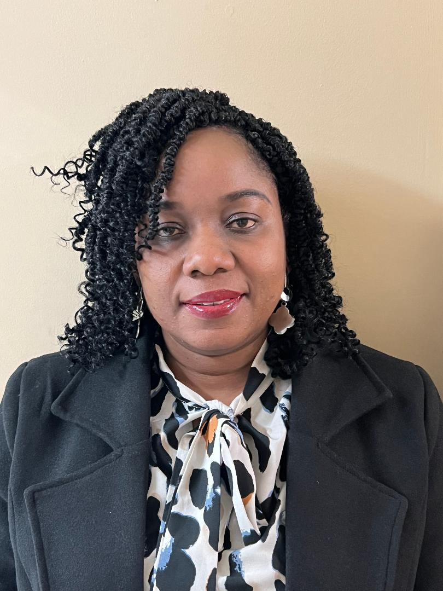

Chinomnso Orji-Nwogwugwu

Contact Me
About Me
Hobbies
Summary
Goal-oriented IT Professional with critical and excellent decision-making. Quick learner with analytical, organizational and leadership skills. Ability to multi-task, work well as a team or independently. Looking for an environment that offers a greater challenge and an opportunity to help the Agency advance efficiently and productively
Education
- Masters Of Information System Management. KELLER GRADUATE SCHOOL OF MANAGEMENT. (Oct 2017)
- Bachelors Of Science In Accounting.ABIA STATE POLYTECHNIC, ABA, ABIA STATE (Aug 2002) (Evaluated by WES)
Work Experience
AUGUST 2021-current
INFORMATION SYSTEMS ANALYST III, SUPERIOR COURT ADMINISTRATION OF FULTON COUNTY
- Serve as Technical support for the Superior court Judges and employees seeking technical assistance over the phone, email, or in person in use of Technology to better serve the citizens of Fulton County.
- Use of Manage Engine Service Desk Plus Ticketing system and Manage Engine Desktop Central to record service desk activities and remote control
- Record of service desk activities, resolutions and closing of tickets using the ticket management system.
- Taking of IT Inventory, recording and Processing of the Superior Court equipment
- Support users with the Odyssey System, GA eFiling system, other Curt Technologies
- Part of the Team maintaining the new Fulton court website>
- Updates the weekly schedule for the presiding Judges on the Fultonsuperiorcourtga.gov website
- Manage announcements, manage and update the Judges list by adding and deleting the records as needed.
- Use of Zoom Controller to manage zoom rooms and support Court proceedings
FEBRUARY 2019-AUGUST 2021
SERVICE DESK ANALYST II, FULTON COUNTY GOVERNMENT
- Serve as the first point of contact for employees seeking technical assistance over the phone, email, or in person
- Record of service desk activities, resolutions and closing of tickets using the ticket management system.
- Taking of IT Shop equipment Inventory, recording and Processing of the county’s surplus equipment
- Reset user’s password for various county enterprise applications, including Active Directory.
- Follow up unresolved issues and escalate to the next level of support.
- Follow up with clients to ensure optimal customer satisfaction following support engagement and problem resolution.
- Patching of software and installing new versions to eliminate security issues
- Create support documentation thereby empowering and enabling user community to extend skills, leverage system features and find resolutions to questions without intervention from support team.
- Troubleshooting and resolving users’ issues through remote desktop support and utilizing SCCM tool remote control or remote assistance
- Provide VPN support for users working remotely
APRIL 2017- FEBRUARY 2019
IT SUPPORT ANALYST, ATLANTA REGIONAL COMMISSION
- Performed remote troubleshooting through diagnostic techniques and pertinent questions
- Provided technical assistance and support to staff for network, hardware and software issues, troubleshoot problems and develop solutions.
- Walked the customer through the problem-solving process
- Recorded service desk activities, resolutions and closing of tickets using the ticket management system.
- Followed-up and update open issues in ticketing system.
- Created and maintained Knowledge Based articles in ticketing system
- Created user and email accounts in the Active Directory
- Performed monthly system maintenance
- Performed testing on iOS mobile, web application developed by the Agency before GoLive
- Worked closely with Business Analyst to ensure clarifications in business requirements.
- Created and executed test cases utilizing negative and positive test data to ensure coverage of test steps.
- Tracked and logged defects utilizing the agency SharePoint forms
- Assisted the DBA in Administering and managing the SQL Server Databases.
Skills
- MS Office 365 ------------Advanced
- Win 10 and 11-------------Intermediate
- Audio/Visual /Creston----Basic
- Active Directory ----------Intermediate
- RemedyForce---------------Intermidiate
- FootPrint--------------------Intermediate
- Odyssey---------------------Basic
- Kronos Workforce Dimension-------Basic
- Pivot table--------------Basic
- Tableau-----------------Basic
- Solar Winds (Samanage) – Intermediate
- Manage Engine ---Intermediate
- RDP & VPN-------------------- Advanced
- MSSQL-------------------Intermediate
- MySQL-------------------Basic
- Quality Center---------Basic
- UFT/QTP----------------Basic
- Soap UI------------------Basic
- LoadRunner------------Basic
- Reporting & Documentation-Advanced
- Customer Relations-------------Advanced
- Software Installation----------Intermediate
- Incident Handling--------------Intermediate
- Zoom Room Controller --Intermediate
CERTIFICATIONS
- ISTQB Certified Tester Foundation Levels (CTFL), JANUARY 2018
- Microsoft Certified Professional (MCP), JULY 2018